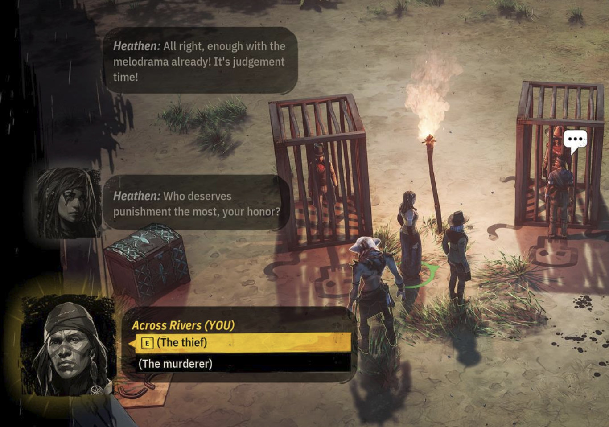
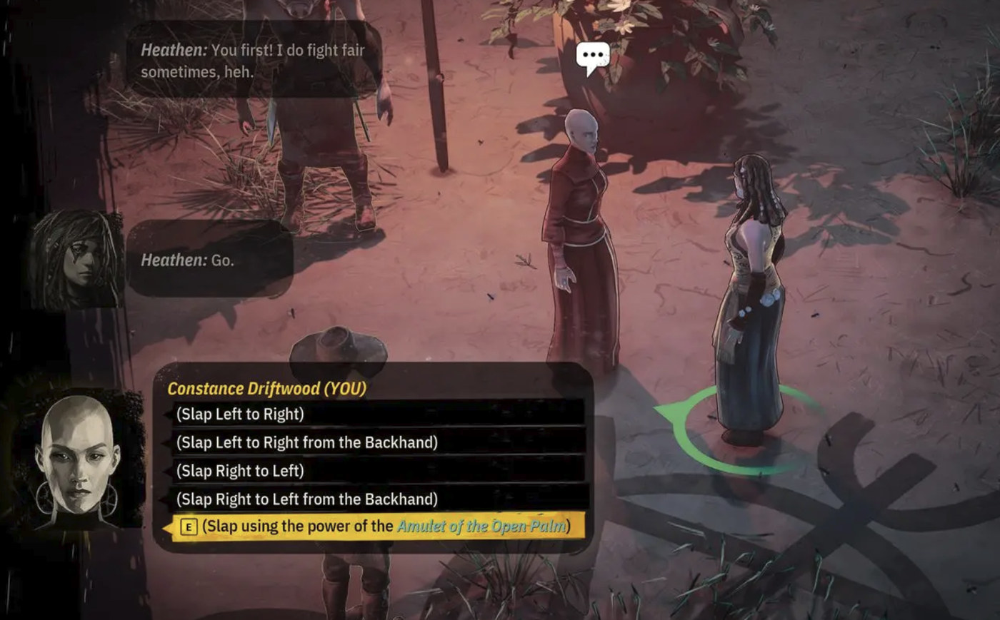
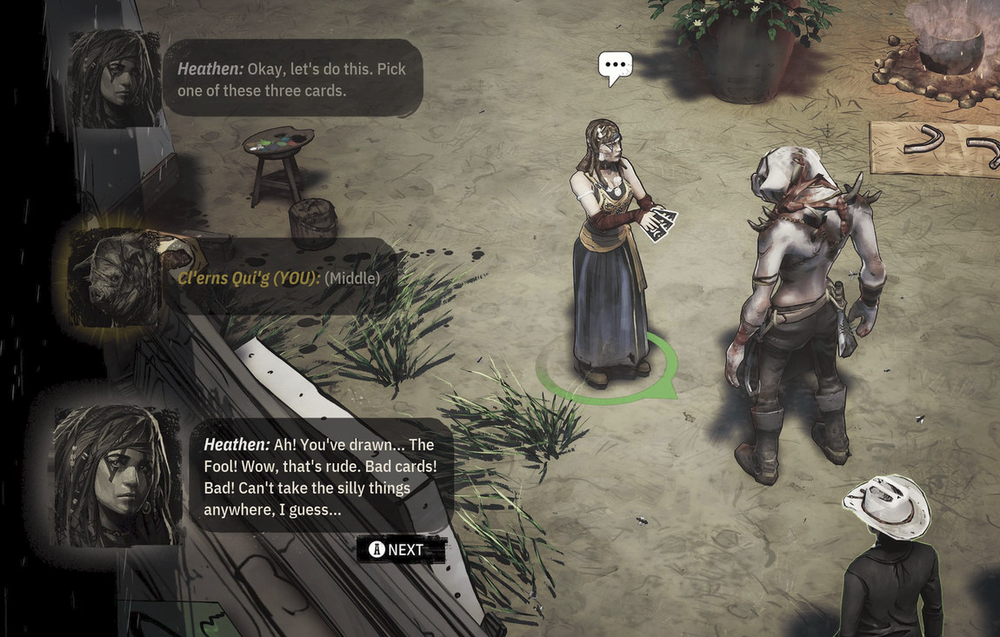
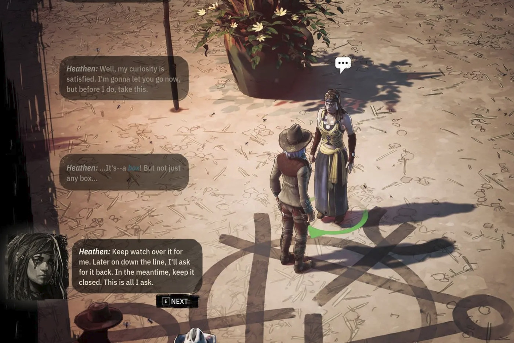

Weird West
Weird West was built by a very small team of roughly 25 people, all working remotely from across the world. As such, everyone was encouraged to wear many hats. Over my year and a half long contract I worked on location setup, quest design, encounters scripting, even some art, and finally dialogue writing, including multiple Heathen encounters and optional side quests. I also built a single-card poker mini-game through a combination of blueprint scripting and our dialogue system.
Screenshot gallery
Interactive encounters
This single-card poker encounter showcases my work as both a writer and gameplay designer. I wrote the dialogue and implemented the encounter through a combination of Blueprint scripting and the game's dialogue system.
Writing samples
A dedicated collection for selected dialogue, quest writing, and narrative excerpts from my work on Weird West.

Judgement
Heathen encounter · Branching dialogueThe Heathen recruits the player to hear two prisoners' pleas and decide who deserves punishment, in a darkly humorous encounter.
Read sample ↗WRITING SAMPLE / 02
The Slap Game
Heathen encounter · Interactive dialogueA playful confrontation built around choices, reactions, and escalating exchanges.
Read sample ↗WRITING SAMPLE / 03
Tarot Cards
Heathen encounter · Dialogue & choicesA tarot-reading conversation with branching player responses.
Read sample ↗WRITING SAMPLE / 04
The Box
Heathen encounter · Quest dialogueThe Heathen entrusts the player with a mysterious box, asking them to keep it closed until she returns to claim it.
Read sample ↗